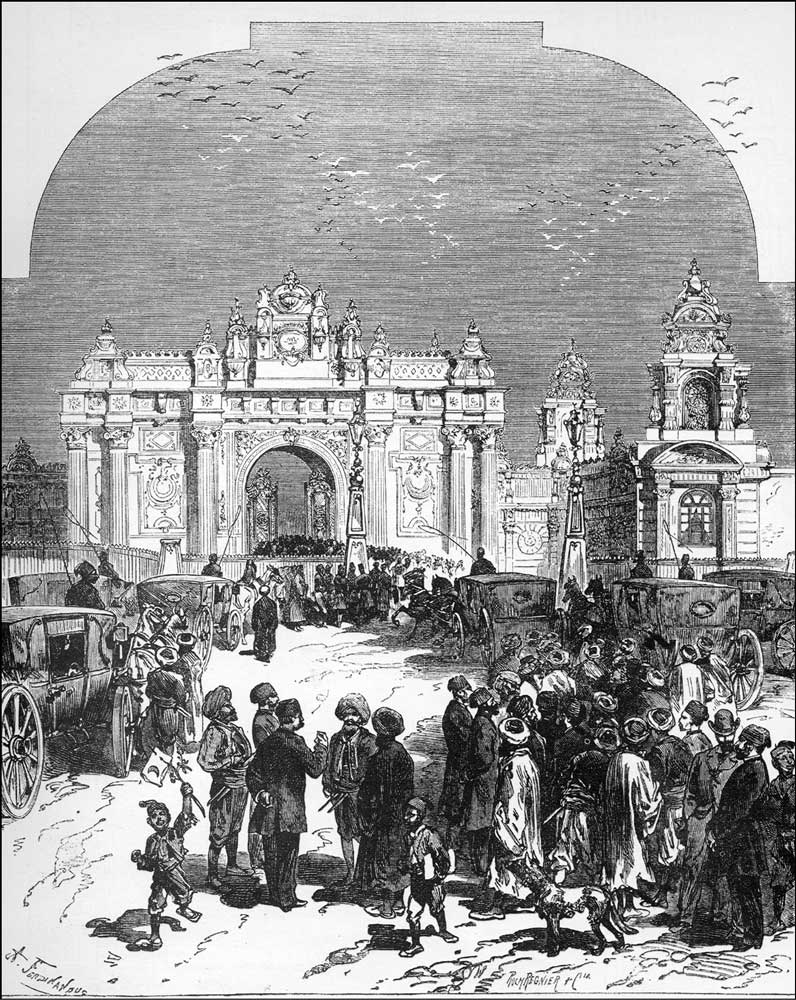

SON OSMANLILAR
28 Temmuz 1914’te Avusturya-Macaristan veliahdı Franz Ferdinand’ın Saraybosna’daki katli, bir dizi büyük hükümetin, en başta Avusturya-Macaristan, ardından Rusya ve Almanya’nın Sırbistan’a karşı veya taraftar tutumları dolayısıyla karşılıklı savaş ilanına neden oldu ve dünya, Cihan Savaşı’na girdi. Bu savaşa Türk İmparatorluğu, 29 Ekim 1914’te, Rusya’ya harp ilanıyla katılmıştır ve merkezî devletler olan Almanya, Avusturya-Macaristan ittifakında yer alarak kalabalık büyük devletler camiasına karşı savaşa girmiştir.
Bu akıl almaz ölçüsüzlük ve yanlışlığın bir nedeni de, savaşa ilk önce İngiltere ve Fransa yanında girmek istememize rağmen onlar tarafından refüze(!) edilmemizdir. Bu doğrudur. Balkan Savaşı’nda önemli bir varlık gösteremeyen askerlerin, komutanların politikaya karışmaları dolayısıyla umulmadık mağlubiyetlere uğrayan Türk Ordusu hakkında “modern savaşa ehli değildir” gibi bir yanlış intiba doğmuştur. Askerî çevrelerdeki subay ve erleri iyi tanıyan Almanya ve Avusturya-Macaristan, bu intibaya katılmıyordu; ama Türklerle temaslarını ve harp tecrübelerini çoktan beri kaybeden İngilizlerin 19. yüzyılda sahip oldukları müspet intiba bu dönemde silinmişti.
Kimse, yanında ayak bağı olacak bir müttefik istemez. Osmanlı genelkurmayının bu savaşa girmek istemediği açıktır. Savaşa girmek isteyen Enver Paşa ve onun Alman müşavirleridir.
Bildiğiniz komutanların hepsi, o zamanki genç askerlerin başında Mustafa Kemal ve Hikmet Bey, Şükrü Paşa veya Esat Paşa gibileri böyle bir ittifaka taraftar değildi. Kaldı ki İsmet Bey’in savaştan biraz evvel bir kurmay olarak verdiği ve yayımlanan rapor durumu açıkça göstermektedir. “Belki” diyor, “Tannenberg’de Ruslara karşı zafer kazanan Almanya’yla müttefik olmak anlaşılabilirdi; ama bu ordunun Fransa karşısında Marne Cephesi’nde duraklaması, Alman kuvvet-i askeriyesinin umduğumuz gibi mükemmelin üstünde olduğunu da göstermiyor. Şu halde, bunlarla birlikte savaşa girilemez”.
Savaş uzun cephelerde, uzun yıllar devam etti. Bu savaşta toptancı bir hüküm veremeyiz. Şu kadarını söylemek gerekir: Birinci Cihan Savaşı’ndaki savaşan Türk ordularının zabitleri içinde, komutanları içinde en ehliyetsizleri, Enver ve Cemal paşalardır. Harika savunma örnekleri, hücum örnekleri veren komutanlar vardır. Mesela Hayfa’da şehre girmek üzere olan İngiliz tümenini yüz küsur kişilik birliğiyle, topografyayı çok iyi bildiği için müthiş bir makineli savaşıyla durduran Bilal Bey, bunlardan biridir.
Bu kahraman ve bilgili zabitlerimizin tarihini de biz yazmış değiliz. İsrail askerî tarih uzmanlarının makaleleri arasından okuyabilirsiniz. Kutülammare’de Halil Paşa’nın Towshend’e karşı verdiği savaşla zaferi kazanmışızdır. İngiltere gibi dünyanın en taze ve en birikimli, en kalabalık ordularını Süveyş cephesinde uzun zaman oyalamak konusunda Şehzade Fuad Efendi’nin gösterdiği yararlılık, Gelibolu’da Mustafa Kemal Bey gibi genç askerlerin gösterdiği savunma gücü, bu komutanların bazılarının Enver Paşa’nın kıskançlığını da celbetmesine yol açmıştır. I. Cihan Harbi yalnızca Sarıkamış’taki bilgisiz yenilgimizden ibaret değildir. Hiç lüzumu yokken, donanımları iyi, fakat askerî güçleri düşük Avusturya ordusuna destek için Galiçya’ya bir kolordu göndermek de bu basiretsiz politikanın neticesidir; ama şu da var ki Birinci Cihan Harbi sonunda, Türk orduları, savaşı iyi götüren, modern ordular olduklarını ve Türk milleti, vatanperver bir bilince ulaştığını göstermiştir.
Dört yıllık insan kaybımızın haddi hesabı yoktur. Okullar boşalmıştır. Ziraatı yapacak, kasabada zanaatı götürecek genç kuvvetler artık yoktur. Türkiye, bu insan kaybını telafi için daha en azından 30 sene uğraşmak zorunda kalacaktır. Bir yerde kalkınmamıza İkinci Cihan Harbi’nin sonuna kadar dumura uğratan bir durumla karşı karşıyayız. 1920 çok önemli bir yıldır; çünkü 1919’da İtilaf Devletleri, Türkiye’ye karşı haksız bir muahadeyi dayatmak istemektedirler. Üstelik yapılmayacak bir şeyi yapmışlardır.
Türkiye İmparatorluğu’nun topraklarını büyük devletlerin geçici işgaline bıraksalar, belki bu kadar tepki çekmeyeceklerdi. Ama Osmanlıya karşı, Macaristan’a, Avusturya’ya ve Almanya’ya karşı yapılanların çok daha fazlası yapılmak istenmektedir. Savaşa son anda İtilaf Devletleri yanında giren Romanya ve Yunanistan’a aşırı hediyeler bahşettiler.
Macaristan’ın Transilvanya, Bulgaristan’ın Dobruca gibi verimli topraklarını Romen Krallığı’na vermişlerdir. Yunanistan’ı ise Küçük Asya’da mükâfatlandırmayı akıllarına koymuşlardır. Bu durum, müttefikleri olan İtalya’yı gücendirdiği gibi Türklerin de aşırı tepkisini çekmiştir.
1920 Nisanı’nda makam-ı saltanat ve hilafeti kurtarmak için Osmanlı anayasasını; yani Kanun-i Esasi’yi ve Osmanlı nizamını kabul etmiş görünen aynı ordunun, aynı mülkî teşkilatın bütün dış ağlarından yararlanan bir mücadele Ankara’da başlamıştır ve 1920’den sonra zor veya kolay, zaman zaman tehlike altında da olsa Türkiye’nin kaderini Ankara elinde tutmaktadır. Bunda bugünün tarihçileri hemfikir olduğu gibi, o günün Avrupalı politikacıları da galiba gerçeği itiraf etmişlerdir.
Çünkü bir müddet sonra İngiltere ile gerilime giren müttefik Fransa, Ankara ile bir antlaşma yapmıştır. İtalya, zaten en başından beri Ankara’ya karşı sempatik davranmaktadır. Uzun süren bu milli mücadelenin sonunda Anadolu’daki orduların zaferini tanımakta ve saygı göstermekte geciken makam-ı saltanat, 1 Kasım 1922 tarihinde Büyük Millet Meclisi hükümeti tarafından lağvedilir.
Böylelikle, Osmanlı hanedanı 622 senelik hâkimiyetini kaybeder. 15 gün sonra, 18 Kasım’da son padişah VI. Mehmed Vahideddin, İstanbul’u terk etmekten başka çare göremez. Bu terk hikâyesi üzerinde biraz duralım. Vahideddin, 19. yüzyılda artık tasvip edilemeyecek hale gelmiş Osmanlı veraset sistemindeki aksaklık dolayısıyla iyi yetişememiş şehzadelerdendir. Bazı şehzadeler, Galatasaray’da okumakta, Harp Okulu’na gitmekte, tıpkı son halifenin oğlu Ömer Faruk Efendi örneğinde görüldüğü gibi Prusya’da, Avusturya’da askerî eğitim görmekte veya Abdülhamid’in diğer oğlu Burhaneddin Efendi veya Osman Fuad Efendi örneklerinde olduğu gibi Avrupa hayatını, politikasını, askerlik sistemini yakından tanımakta, lisanlar öğrenebilmektedir. Belki tahta yakın olan şehzadelerin Sultan Abdülhamid tarafından gözaltında tutulması bunların yetişmesinde bazı aksaklıklar yaratmıştır. Dünya politikasını öğrenecekleri danışmanları yoktur. Kimse onlarla temas etmemektedir. Bırakın memleket dışını, memleket içinde bile gezi yapma imkânları yoktur.
Maalesef bu tip bir eğitim sisteminin zararlarını görenlerin başında da son padişah gelmektedir. Vahideddin, tanımadığı dünya politikası yüzünden başlangıçta Anadolu hareketinin başına Mustafa Kemal Paşa’yı adeta hediye ederek yararlı bir teşebbüse başladığı halde, sonunda oradaki iktidar kaymasını kavrayamamış, hazmedememiş ve Anadolu’yla karşı karşıya gelmiştir.
Ali Kemal, kıymetli bir yazar olmasına ve kendince memleketi sevmesine rağmen, hissiyatı her şeyin önünde gitmektedir ve Anadolu hareketine karşı makam-ı saltanatı kışkırtanların başında gelmektedir. Diğer yandan hanedanın en değersiz mensubu Damat Ferit Paşa son derece bilgisizdir ve feraseti son derece kıttır; Sultan tarafından sadaret ile hem de bir kere değil, birkaç kere görevlendirilmiştir. Vakıâ Damat Ferit’in sadareti ve kurduğu kabinelerin ömrü öbürlerinin yanında süre olarak pek önemsiz kalır; ama bu arada verdiği zararın sonu yoktur. İşte bu yüzden saltanat makamı gerek Ankara, gerek milletin belirli kesimleri gözünde zedelenmiştir.

Dolmabahçe Sarayı önü.
Bu zedelenme, Büyük Millet Meclisi’nin saltanatı lağvetmesine kadar gitmiştir. Saltanat lağvedildikten sonra İstanbul’u terk ederek Avrupa’ya sığınan son padişahın bir davranışının üzerinde durmalıyız.
Elinde imkân olduğu halde Osmanlı hazinesini yağmalamamıştır ve dört yıl sonra sürgünde fakrüzaruret içinde, borç içinde ölmüştür. Üstelik bu borcu da yaşayabilmek için yapmıştır. Tahtı terk ettiği gün, yakınları, Doktor Reşat Paşa, oğlu ve hareminden başka kimseyi yanına almayan, hatta kızlarını ve torunlarını bile burada bırakan padişahın ardından, bir müddet sonra hanedan bütün üyeleriyle sürülecek, Avrupa’ya sığınacaktır.
Saltanatın lağvından sonra, belki de 1300 yıllık İslam tarihinde ilk defa olarak Halife’yi ümmet adına bir meclis seçmektedir ve bu halife de bir buçuk yıl kadar sonra bu makamdan azledilecektir.
Abdülmecid Efendi, o tarihe kadar veliaht-ı saltanattır. Anadolu hareketine sempatisini göstermiştir; fakat hilafete oturduktan sonra bu makamın ne olduğunu anlayamamıştır. Çünkü halife demek, müminlerin emiri olarak iktidarı ve idareyi elinde bulunduran kişi olmalıdır. İdare ve iktidar her yönüyle Ankara’dayken İstanbul’da nasıl bir halife olacaktır? Bunu anlayacak adamın tarih bilgisi, siyaset bilgisi, önsezisi ve manevra kabiliyeti son derece yüksek olmalıdır.
Halife Abdülmecid Efendi kültürlü bir şehzadeydi. Resim yapıyordu ve bazı tabloları müzeliktir. Ama asıl önemlisi, güçlü bir bestekar oluşudur. Abdülmecid Efendi mütareke dönemi ve İstiklal Savaşı sırasında Anadolu hükümetiyle olumlu ilişkiler kurmuştu; bununla birlikte halifenin bazı hanedan üyelerinin de belirttiği gibi siyasetten anlamadığı, Ankara hükümetiyle dengeli ilişkileri sürdürmek yerine alayişli selamlık alayları tertiplediği, hatta bunlardan birinde Fatih Sultan Mehmet kıyafetiyle geçtiği biliniyor. Maalesef protokol ve bütçe işlerinde de ölçülü bir idare kuramamıştı ve Ankara’yla gerilimli ilişkilere girdi. Muhtemelen, hanedanın sonunu, bu gibi hareketler hızlandırmıştır. Yeni cumhuriyetin iktidar savaşına tahammülü yoktu. Esasen hilafet kurumu da, iktidarın dışında kalmak gibi garip bir hukuki konumla bağdaşamazdı. Zira hilafet ruhani bir makam değildir. Dünyevi iktidar sahibi olmak gerekir. Bu sonuç kaçınılmazdı.
3 Mart 1924’te, Dolmabahçe Sarayı’nın kütüphanesinde, İstanbul valisi ve Ankara’dan gelen temsilciler heyeti, unvanı yalnızca halife olan son halife Abdülmecid Efendi’ye Millet Meclisi’nin kararıyla bu görevinin sona erdiğini ve kanun gereği yurtdışına çıkarılacağını tebliğ ettiler. Halifenin itirazı ve kalmakta diretmesi faydasızdı; birkaç saat içinde Sirkeci Garı’nda alayiş olmaması için en yakın yardımcılarıyla Çatalca’ya gönderildi ve orada bekletilen trene ilave edilen vagonla yurdu terk etti. Bir hafta içinde Osmanlı hanedanı üyeleri yani şehzade ve sultanlar da aynı şekilde sürgün edildi.
Osmanlı geleneğinde; hanedan üyesi demek, padişahın ve erkek evlatlarının sulbünden gelen erkek ve kadınlardır. Bunlara Avrupa dillerinde imparatorluk prensi ve prensesi denir. Onların evli olduğu erkek ve kadınlar, prenseslerin hanım sultan denen kız çocukları ve beyzade denilen oğulları hanedan üyesi sayılmazlar; mensubudurlar. Dolayısıyla eşlerin ve bu durumdakilerin yurtdışına gitmesi gerekmiyorken, çoğu küçük yaşta olduğundan veya yalnız kalamayacağından ebeveynlerini veya eşlerini izleyerek kafileye katıldılar. Hükümet sürgünlere adam başına biner sterlin, dönüşü olmayan birer pasaport ve makul miktarda mücevher çıkartabilme hakkı tanımıştı. Hanedan üyelerinin malvarlıkları bazı istisnalar dışında müsadere edilmemişti. Ama bu emlakın, memlekette kalacak yakınlar tarafından çarçur edildiği veya o yıllarda emlakın bugünkü kadar para etmediği düşünülürse gidenlerin uğradığı mali güçlük tasavvur edilebilir.
Zaten çok zengin bir hanedan söz konusu değildir. Daha önce de belirttiğim gibi bizzat padişah hazineden bir zümrüt parçasına bile el sürmezken, öbürlerinin kanunun ve kararın öngördüğünün ötesinde bir şey çıkarmaları mümkün olmamıştır. Dolayısıyla, Osmanlı hanedanı, tahtların ve taçların yıkıldığı bir dünyada sürgüne giden hanedanların içinde en perişan olanı, en fakir hayat yaşayanıdır.
Osmanlı hanedan üyeleri yurtdışında zor günler geçirdiler; parasızdılar. Avrupa bankalarına para yatırmayan tek hükümdar ailesiydi. Buna rağmen geçinmek için onursuz bir yaşam seçmediler. Yüz kızartıcı suçlar işleyen çıkmadı. Asıl önemlisi Türk devleti ve milleti aleyhinde cemiyet kurmak, kışkırtıcı politika gütmek gibi olumsuzlukları hiç denemediler. Birinci Cihan Harbi’nden sonra tahtını kaybeden diğer hükümdar ailelerine göre; onların bu devleti ve yurdu sever tutumlarını takdir etmeliyiz. Hanedanın genç üyeleri yurtdışında imkânsızlıklara rağmen tahsillerini gördüler. İçlerinde Avrupa ve Amerika’da en seçkin çevrelerde hayranlık uyandıracak yerler edinenler vardır. Bugünkü hanedan reisi Osman Ertuğrul Efendi’nin ifadesiyle, “Bizim ailemiz için iyi olmayan şey, Türkiye için hayırlı olmuştur” düsturunu terk etmemişlerdir.
Bunun üzerinde duralım: Osmanlı hanedanı, Mısır hıdivleri gibi değildir. Hele bu hıdivler ailesinin en kötü yanı olan Kral Fuad ve Faruk’a benzemezler. Osmanlı hanedanı, İran’daki darbeci soy olan Pehleviler gibi de değildir. Devletin ebediyetine ve her şeyin üstünde tutulması gereğine inanırlar. Son padişah hazineden ödünç aldığı babasının saatini bile gitmeden bir müddet evvel geri vermişti. Hazine yağmalayarak veya Avrupa bankalarına para yatırarak rahata ereceklerine inanmazlar ve Türkiye devletini yöneten insanlara karşı çıkmanın bu milletin ve devletin bekasına zararlı olduğunu da savunurlar. Bu asil davranışı takdir etmek gerekir.
Türkiye’de ciddi bir monarşist akım ve hareket de yoktur. Olmamıştır. Sebebi de şudur: Asker bir milletin, militarist ruhlu bir milletin, tehlikeler ve savaş karşısında organize olmayı bilen bir kavmin zaferleri ve savaşları hiç şüphesiz ki birkaç mareşalle sınırlı değildir.
O Mareşal; yani Fatih Sultan Mehmet; yani Kanunî Sultan Süleyman, hiç umulacak şey değil, sancaklara şehzade çıkma adeti çoktan kalktığı, kendisi sarayda büyüdüğü halde 17. yüzyılın dahi mareşali IV. Murad’ın soyundan gelenler, umulmadık biçimde iyi asker oluyorlar. Bu mareşaller, bu savaşları tek başlarına başarmıyorlar. Mustafa Kemal Bey; yani Atatürk gibi 20. yüzyılın büyük mareşali ve etrafındaki değerli kurmaylar, bu işi kimle yapıyorlar? Neferlerine kadar büyük bir kalabalıkla. Sosyolojik olarak böyle bir kitlede, böyle bir kitlede sorumluluk da paylaşılıyor, şan ve şeref de paylaşılıyor.
Bu bakımdan Türkiye’de yaşayan devletin varlığı, yaşayan devletin kimliği ve hayatiyeti her şeyin önünde gelmektedir. Bu yüzden de cumhuriyet rejimi münakaşasız bir şekilde oturmuştur. Biz de cumhuriyetin anlamı bilinmediği, tam öğrenilmediği gibi Osmanlı Saltanatı’nın bir büyük zafiyeti vardır, veraset sistemi.
Tahta kimin nasıl geçeceği, Fransa’daki gibi, Habsburglar Avusturya ve Almanyası’ndaki gibi sağlam esaslara bağlanmamıştır. Taht kavgaları dolayısıyla bu veraset sisteminde yaşanan değişmeler ve sağlam olmayan noktalar yüzünden bilhassa 17. yüzyıldan itibaren padişahların çok iyi yetişmediği görülür. Çok açıktır ki son iki hükümdar devlet hayatı için hazırlanmış dünya olurunu anlayan, takdir edebilen hükümdarlar değillerdir. O yüzden de bir başarısızlığın, bir felaketin ortasında kalmışlardır.
Son hükümdar tahta çıktığı gün şehir bombalanmıyordu. O gün bombalanmaması, hükümdarın kılıç kuşanma; yani bir başka deyişle taç giyme töreni yüzündendir ve İngilizler o yüzden bombalamamışlardır; çünkü ne olursa olsun büyük bir monarşinin mensubuna hürmet edilmesi gerekmektedir. Büyük devletler arasında savaşta dahi uyulması gereken kurallar vardır. Tahta çıkan hükümdarın, bilhassa mütareke döneminde Unkapanı Köprüsü’yle Bebek arasındaki kesim dışında bir hükümranlığı yoktur. Burada İngiliz işgal kuvvetleri, hükümdara duyulan saygı yüzünden Türk jandarmasına ve polisine bu meydanı boş bırakır gibi görünüyorlar; ama Dolmabahçe’ye çevrilen zırhlılar ve topları yüzünden padişah sarayı terk ederek Yıldız’a çekilmiştir. Bu zor durumda her şeye rağmen ordu ve mülkî idare işleyebilmektedir, paralelliğini kurabilmektedir. İşte bunu becerecek dâhi insanlar mücadeleyi yürütmektedir.
Çok açıktır ki İzmir’in işgal edildiği 15 Mayıs 1919’dan sonra bu hareketlerin hızlanması, örgütlenmenin büyümesi ve sonunda hiç şüphe yok ki 20. yüzyılın dâhisi Mustafa Kemal Paşa’nın hareketin başına geçmesi, hareketin Anadolu’ya taşınmasıdır. Bu tarihten itibaren, artık Türkiye’yi Anadolu hareketi yönetmektedir. Ankara Antlaşması’ndan sonra Paris’te biri İstanbul’un, diğeri Ankara’nın olmak üzere, iki elçilik vardır. Öyle ki Ferid (Tek) Bey’in bulunduğu Paris’teki elçiliğimizde bir ziyafet verildiğinde, çatal bıçak bulunmadığında, İstanbul’un temsilcisi Muhtar Bey’den alınırmış.
Saltanat makamı gözden düşmüştür. Kimin gözünden düşmüştür? Toplumu yöneten elit zümrenin gözünden ve o elit zümre çok kudretlidir. Sadece örgütün başında olduğu için değil; dehasından dolayı. Britanyalı Siyasetçi, İngiltere başbakanlarından Lloyd George’un parlamento nutkuna atfedildiği gibi, yeryüzüne yüzyılda bir gelen deha Küçük Asya’da çıkmışsa ortaya, biz ne yapalım! Bu atfa da dayanılarak belli ki ortada artık itiraz edilmez bir kudret vardır. Bu, saltanattır. Saltanatın lağvı kaçınılmaz, ani ve sürükleyici olmuştur; fakat hilafet için aynı şey söylenemez. Galiba orada yeni cumhuriyet, daha fazla iç ve dış müdahaleyle ve itirazlarla uğraşmak zorunda kalacaktır.
Hilafetin bu asırda restore edilmesi mümkün mü? Şüphesiz hayır. Bu kadar çok milli devletin, liderlik iddiasının ve maalesef mezhep çatışmalarının dorukta olduğu İslam dünyasında bu kurumun ihya edilmesi mümkün değildir. Bir yerde herkes kendinin halifesidir. Hilafetin kime nasıl geçeceği konusunda da sarih hüküm yoktur. Hilafet iktidar ister. Cihanşümul iktidar Osmanlı ile tarihe karışmıştır. Hilafetin de ismi kalmıştır ve 19. yüzyıl Osmanlı hilafeti gibi bir kurumu ne İslam dünyası bir daha kurabilir ne de dış dünya aynı şekilde kabul edebilir. O da bittikten ve tarihin sınırlarının içine çekildikten sonra artık hilafetten bahsetmek de pek mümkün olmayacaktır.